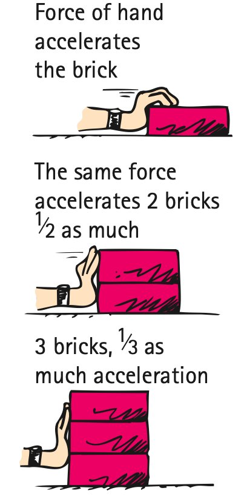

Unit 3.1 · Activity 1 · Force and AccelerationProblem 9
Problem 9
DOK 2
9. Use the source image showing equal force applied to different amounts of mass. Explain why the larger mass has the smaller acceleration.

Unit 3.1 · Activity 1 · Force and AccelerationSolution 9
Solution 9
DOK 2
9. Use the source image showing equal force applied to different amounts of mass. Explain why the larger mass has the smaller acceleration.
Rationale: The applied/net force is comparable for both objects, but $a=F_{net}/m$. The larger mass has greater inertia, so the same force produces a smaller acceleration.
Unit 3.1 · Activity 1 · Force and AccelerationProblem 10
Problem 10
DOK 2
10. Trial A uses a 3-kg cart with 12 N net force. Trial B uses the same cart with 30 N net force. Find both accelerations and compare the factor of change.
Unit 3.1 · Activity 1 · Force and AccelerationSolution 10
Solution 10
DOK 2
10. Trial A uses a 3-kg cart with 12 N net force. Trial B uses the same cart with 30 N net force. Find both accelerations and compare the factor of change.
Work: Trial A: $a=12/3=4\text{ m/s}^2$. Trial B: $a=30/3=10\text{ m/s}^2$. The force increased by $30/12=2.5$, and the acceleration also increased by a factor of $2.5$.
Unit 3.1 · Activity 1 · Force and AccelerationProblem 11
Problem 11
DOK 3
11. A classmate argues, “A large force always means a large acceleration.” Explain what important variable is missing from that claim and give a numerical counterexample.
Unit 3.1 · Activity 1 · Force and AccelerationSolution 11
Solution 11
DOK 3
11. A classmate argues, “A large force always means a large acceleration.” Explain what important variable is missing from that claim and give a numerical counterexample.
Rationale: The missing variable is mass. For example, $100\text{ N}$ on $100\text{ kg}$ gives $1\text{ m/s}^2$, while $20\text{ N}$ on $2\text{ kg}$ gives $10\text{ m/s}^2$. A larger force does not guarantee a larger acceleration when masses differ.
Unit 3.1 · Activity 1 · Force and AccelerationProblem 12
Problem 12
DOK 3
12. A cart is moving left but accelerating right. Explain how this is possible and describe what its speed initially does if the rightward net force continues.
Unit 3.1 · Activity 1 · Force and AccelerationSolution 12
Solution 12
DOK 3
12. A cart is moving left but accelerating right. Explain how this is possible and describe what its speed initially does if the rightward net force continues.
Rationale: Velocity and acceleration can point opposite directions. A cart moving left with rightward acceleration initially slows down. If the rightward net force continues, it reaches zero velocity and then speeds up to the right.
Unit 3.1 · Activity 1 · Force and AccelerationProblem 13
Problem 13
DOK 2
13. A moving object can have zero net force when it is
A. moving with constant velocity
B. speeding up
C. slowing down
D. turning
E. accelerating downward
Unit 3.1 · Activity 1 · Force and AccelerationSolution 13
Solution 13
DOK 2
13. A moving object can have zero net force when it is
A. moving with constant velocity
B. speeding up
C. slowing down
D. turning
E. accelerating downward
Answer: A — moving with constant velocity Work / rationale: Constant velocity means zero acceleration and therefore zero net force, even though the object is moving.
Unit 3.1 · Activity 1 · Force and AccelerationProblem 14
Problem 14
DOK 1
14. At constant mass, acceleration is directly proportional to
A. net force
B. mass
C. velocity
D. distance
E. time only
Unit 3.1 · Activity 1 · Force and AccelerationSolution 14
Solution 14
DOK 1
14. At constant mass, acceleration is directly proportional to
A. net force
B. mass
C. velocity
D. distance
E. time only
Answer: A — net force Work / rationale: With mass fixed, $a=F_{net}/m$, so acceleration is directly proportional to net force.
Unit 3.1 · Activity 1 · Force and AccelerationProblem 15
Problem 15
DOK 1
15. At constant net force, acceleration is inversely proportional to
A. mass
B. force direction
C. velocity
D. distance
E. time
Unit 3.1 · Activity 1 · Force and AccelerationSolution 15
Solution 15
DOK 1
15. At constant net force, acceleration is inversely proportional to
A. mass
B. force direction
C. velocity
D. distance
E. time
Answer: A — mass Work / rationale: With net force fixed, $a=F_{net}/m$, so acceleration is inversely proportional to mass.
Unit 3.1 · Activity 1 · Force and AccelerationProblem 16
Problem 16
DOK 2
16. A 10-kg cart has 50 N net force. Its acceleration is
A. 0.2 m/s²
B. 5 m/s²
C. 10 m/s²
D. 40 m/s²
E. 500 m/s²
Unit 3.1 · Activity 1 · Force and AccelerationSolution 16
Solution 16
DOK 2
16. A 10-kg cart has 50 N net force. Its acceleration is
A. 0.2 m/s²
B. 5 m/s²
C. 10 m/s²
D. 40 m/s²
E. 500 m/s²
Answer: B — 5 m/s² Work / rationale: $a=F_{net}/m=50/10=5\text{ m/s}^2$.
Unit 3.1 · Activity 1 · Force and AccelerationProblem 17
Problem 17
DOK 2
17. A net force of 16 N causes 2 m/s² acceleration. The mass is
A. 4 kg
B. 8 kg
C. 14 kg
D. 18 kg
E. 32 kg
Unit 3.1 · Activity 1 · Force and AccelerationSolution 17
Solution 17
DOK 2
17. A net force of 16 N causes 2 m/s² acceleration. The mass is
A. 4 kg
B. 8 kg
C. 14 kg
D. 18 kg
E. 32 kg
Answer: B — 8 kg Work / rationale: $m=F_{net}/a=16/2=8\text{ kg}$.
Unit 3.1 · Activity 1 · Force and AccelerationProblem 18
Problem 18
DOK 2
18. A 3-kg object accelerates at 4 m/s². The net force magnitude is
A. 0.75 N
B. 1 N
C. 7 N
D. 12 N
E. 24 N
Unit 3.1 · Activity 1 · Force and AccelerationSolution 18
Solution 18
DOK 2
18. A 3-kg object accelerates at 4 m/s². The net force magnitude is
A. 0.75 N
B. 1 N
C. 7 N
D. 12 N
E. 24 N
Answer: D — 12 N Work / rationale: $F_{net}=ma=(3)(4)=12\text{ N}$.
Unit 3.1 · Activity 1 · Force and AccelerationProblem 19
Problem 19
DOK 1
19. An object experiences a leftward net force. Its acceleration must point
A. left
B. right
C. with the current velocity only
D. upward
E. nowhere unless the object is already moving
Unit 3.1 · Activity 1 · Force and AccelerationSolution 19
Solution 19
DOK 1
19. An object experiences a leftward net force. Its acceleration must point
A. left
B. right
C. with the current velocity only
D. upward
E. nowhere unless the object is already moving
Answer: A — left Work / rationale: Acceleration always points in the direction of the net force, regardless of the object’s current velocity.
Unit 3.1 · Activity 1 · Force and AccelerationProblem 20
Problem 20
DOK 2
20. Which statement is scientifically correct?
A. The same net force produces less acceleration on a larger mass.
B. The same net force produces more acceleration on a larger mass.
C. Mass does not affect acceleration.
D. A moving object always has nonzero acceleration.
E. Acceleration must match velocity direction.
Unit 3.1 · Activity 1 · Force and AccelerationSolution 20
Solution 20
DOK 2
20. Which statement is scientifically correct?
A. The same net force produces less acceleration on a larger mass.
B. The same net force produces more acceleration on a larger mass.
C. Mass does not affect acceleration.
D. A moving object always has nonzero acceleration.
E. Acceleration must match velocity direction.
Answer: A — The same net force produces less acceleration on a larger mass. Work / rationale: For the same net force, a larger mass gives a smaller acceleration because $a=F_{net}/m$.